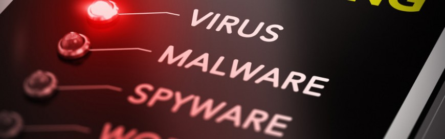
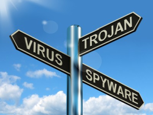
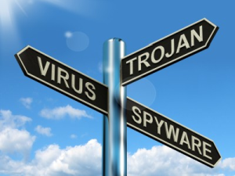
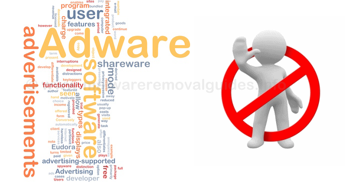
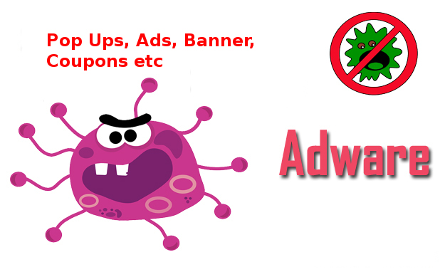
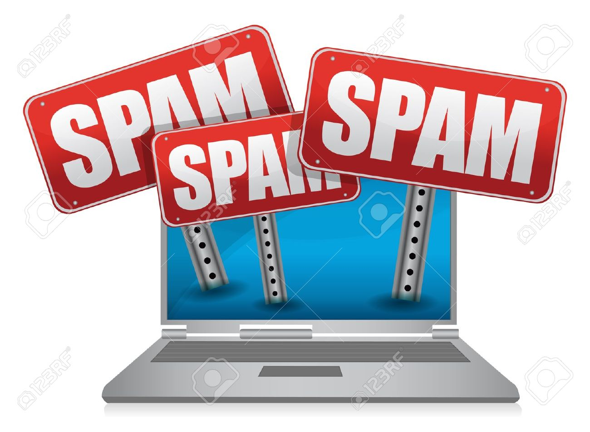
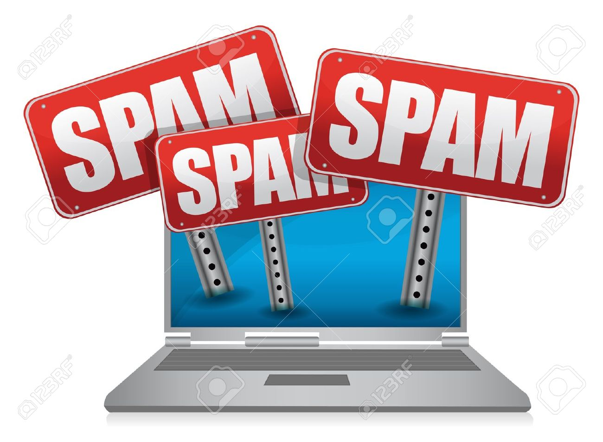
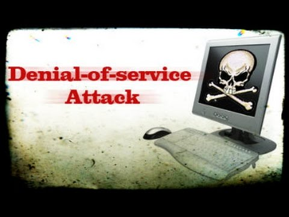

Cyber Threads -:
Cyber threads is any such act which can result in an undesirable incident that could cause harm to your
computer activities .
For example - Your computer becoming unusable , your computer files being deleted or your information
being stolen ,etc.
Some Example of cyber threads could be viruses ,worms ,spam ,emails ,online frauds and hackers. Now
let us understand these.
There are few types of threads which can infect our computer . These are-:

1. Malware :- Malware, short for malicious software , is a software which is used to disturb
computer operations , gather sensitives information or gain access to private compter systems. 'Malware'
is a general term used to refer to a variety of forms of hostile or invasive software.
There are
few types of Malware given below:-

 

a. Virus :- A computer virus is a software program that can replicate
itself and spread from one computer to another or performs other activities like delete or modify files .
Such programs infect some executable software and when the program runs trigered by some action taken
by the users , the virus gets activated and causes harm to the programs.
b. Trojan Horse :-
A Trojan Horse is a version of virus which is unlike a computer virus which does not attempt to inject itself
into other files . Instead, a trojan horse is programmed to deceive the user by appearing to be a genuine file
(like an image or video or a software utility).However ,when used, it performs other malicious activities
likemake copies of itself , steal information , or harm their host computer system . Trojon sometimes access
personal information like e-mail address , credit card number stored locally at home or business computers
, then sends these data to a remote party via the Internet.
c. Worms :-
Worm is a software program that actively transmits itself over a network to infect other computers but
unlike a virus , it has the capacities to travel without any human action . A worm is similiar to a virus by design
and is considered to be a sub-class of a virus which utilize file or information transport protocols on the system,
which is what allow worms to travel unaided.
d. Spyware :-
Spyware includes software programs that are installed on your computer to steal information from it on an
ongoing basis without your knowledge . Hackers may install key logger software which will be able to track
and report to the hackers of all the key strokes you make on your computer .
2. Adware :-
Adware is short from for advertising-supported software. It is a software program that automatically brings
up advertisements in the form of pop-ups. The objectives of Adware is to lure you to click on the advertisement
it helps generate revenue for the author of the advertisement in what is called a pay-for-click advertisement
model. Mostly adware is annoying but other than that it is harmless.



3.Spam :-
Most of us use e-mail . You may have seen unwanted e-mail that come to you promoting some products .
Some of these products or services may be genuine , some may be fake . Also some of the spam messages
are sent to lure you to take actions that may lead to other unwanted implications like downloading of malware
on your computer . These unwanted messages by e-mail or even by SMS are known as Spam .
 

4.Denial Of Services(DOS) :-
Whenever you are prevented to use a website or any other online resources by a deliberate action by somebody
it can be termed as "denial-of-service" attack . Some of the ways through which it can be done includes attempts
to "floods" a network by writing a program which will send too many requests that will end up crashing the
websites . Since the websites is not designed to handle such traffic , it will prevent legitimate network traffic .

 Protection of your Computer
Personal Information
Social Engineering
Cookies
Cyber Safety
Protection of your Computer
Personal Information
Social Engineering
Cookies
Cyber Safety